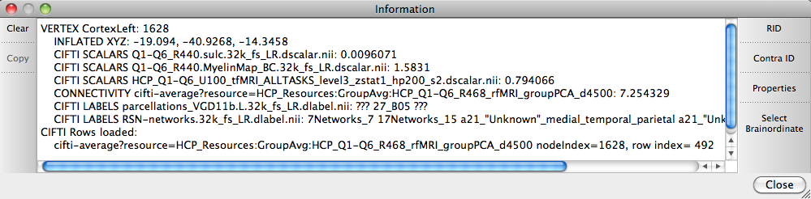

Information Window
The Information Window provides information on identified locations (left click on surface
or volume in the Viewing Area). Information
provided for surface ordinates includes the vertex number,
surface name, x, y, z coordinates on the surface being
displayed, and the values for scalars and labels (plus any other
data that is being displayed) at that ordinate available from
files currently loaded. For volume ordinates, voxel coordinates
in stereotactic space and slice indices for the loaded volume
are given, along with values for connectivity or metric data
loaded that displays in volumes.
- Clear: clears
all information in the Info Window.
- Copy: copies all
highlighted text (left click +drag) in the Info Window for
pasting outside of wb_view.
- RID: Removes all ID symbols off
surfaces in all Viewing Tabs/Windows,
but all Information displayed in the Information Window is
retained.
- Contra ID: Identifies the
corresponding location on the hemisphere contralateral to
the one clicked. Display of contralateral IDs is not
retroactive.
- Properties: opens a box
of settings for ID and Contra ID display attributes.
- Select Brainordinate: opens
a box for selecting surface vertices for identification or
selecting rows from dense CIFTI file for viewing (also
identifies the corresponding vertex, which is not the same
as the row index).
